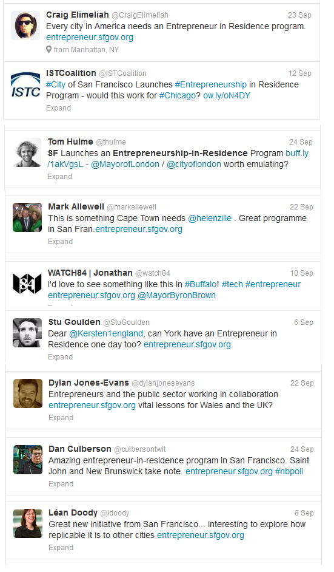

September 29, 2013
Inspired by President Obama’s call, “We’ve got to have the brightest minds to help solve our biggest challenges, Mayor Edwin M. Lee, in collaboration with the White House and other strategic partners, recently announced San Francisco’s first Entrepreneurship-in-Residence (EIR) program inviting startups to work with government to capitalize on the $142 billion public sector market.
Jay Nath, San Francisco’s Chief Innovation Officer said, “With an over $8 billion budget, over 25,000 employees and over 50 agencies and departments, San Francisco represents a number of opportunities for world-class entrepreneurs and startups.” Government is about 40% of gross U.S. GDP spend including state, local and federal spending representing a great opportunity for world-class entrepreneurs and startups.
The program has received enthusiastic support – people across the U.S. and the world as far as London and Cape Town are tweeting and asking their Mayors and cities to emulate an entrepreneurship-in-residence program in their cities to encourage government and startups to work together to address critical issues together.
“Our goal is to have government and entrepreneurs work together to solve issues of pressing importance. It is great to see all the support for these efforts to roll out across cities, states and countries,” said Rahul Mewawalla, a senior executive with leadership experiences across Nokia, NBC, GE and Yahoo and former entrepreneur who is leading the program. He added, “Programs such as this offer a unique opportunity – for government to harness top entrepreneurs and world-class startups, and for entrepreneurs and startups to tap into a $142 billion public sector market while helping make their communities, cities and states a better place.”
The program’s application site has quickly attracted several thousands of views from potential applicants from a broad set of geographies - top 5 states in terms of interested applicants visiting the site are California, New York, Texas, Massachusetts and the District of Columbia.
The program also announced a new set of strategic partners – including Ron Conway, SV Angel and sf.citi, to provide the selected startups and entrepreneurial teams mentorship and entrepreneurial support – in addition to existing partners such as McKinsey & Company. Selected teams will receive direct access to government needs and opportunities, staff and their expertise, in addition to insights, product development, ramp-up support and mentorship from public and private sector leaders from San Francisco, the White House, McKinsey & Company and Goldman Sachs.
San Francisco is receiving applications from numerous innovative startups tackling key areas such as data and analytics, transportation, planning, tax collection, licenses, parking, hiring and increased productivity, education, energy, healthcare, environment, library, parks, airport, resource and asset management, real estate, urban planning, emergency and disaster management, and public safety.
The entrepreneurial products and services developed through San Francisco’s EIR program are expected to drive significant impact such as increased revenue, enhanced productivity or meaningful cost savings.
Examples of opportunity areas that entrepreneurial teams and startups are seeking to work on include:
The program also announced October 6, 2013 as the deadline for applicants to apply at http://entrepreneur.sfgov.org. The program expects to select 3 to 5 teams.